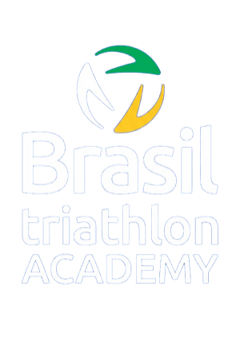

A certificação World Triathlon Level 1 chega ao Brasil em formato híbrido, combinando estudo online, interação com facilitadores e três dias de atividades presenciais no Rio de Janeiro. O foco é desenvolver a capacidade de planejar, conduzir, observar e revisar sessões de triathlon de forma segura, ética e centrada no atleta.
Saber treinar e saber conduzir uma sessão são coisas diferentes. Ser treinador é uma terceira.
Boa parte da formação disponível no Brasil ensina a montar o treino: zonas, volumes, periodização. Poucas ensinam a conduzir a sessão em que esse treino acontece, e quase nenhuma trabalha o que vem antes e depois dela.
O Nível 1 da World Triathlon desenvolve duas coisas. A primeira é a habilidade de planejar e conduzir uma sessão de natação, ciclismo e corrida a partir de uma referência internacional, construída pela World Triathlon e aplicada aqui pela Brasil Triathlon: você coacha seus pares, é observado por facilitadores e recebe feedback individual até atingir o padrão.
A segunda é o papel do treinador além do treino: como se trabalha e desenvolve pessoas, como se mantém um ambiente seguro, como se pratica equidade e inclusão, o que o treinador precisa saber de nutrição e antidoping. É isso que transforma quem prescreve treino em quem forma atletas.
O conteúdo organiza, em linguagem adequada à realidade brasileira, os eixos oficiais da World Triathlon para o Level 1. A estrutura gira em torno de três perguntas centrais — o QUE treinar, COMO treinar e QUEM está sendo treinado — somadas ao coaching seguro e ético, ao planejamento de sessões e ao desenvolvimento contínuo do treinador.
A World Triathlon organiza o Level 1 em torno de três perguntas — o QUE, o COMO e o QUEM do coaching — com atividades em grupo, discussões, reflexão, conteúdos orientados e, principalmente, oportunidades práticas de coaching. Prepare-se para dedicar aproximadamente 60 horas no total, entre preparação, estudo online, interação com facilitadores, prática e atividades avaliativas.
A parte teórica ocorre principalmente no World Triathlon Education & Knowledge HUB, com encontros síncronos e atividades assíncronas. Estude o conteúdo, faça as tarefas e os questionários e atinja os requisitos para seguir às etapas de interação e prática.
Atividades práticas relacionadas às disciplinas do triathlon, sessões de coaching, observação e feedback individual, discussões e tarefas aplicadas. Participação integral nos três dias.
Avaliação contínua ao longo do curso, com conversas individuais de feedback e orientação com os facilitadores. A certificação é obtida após o cumprimento e a aprovação em todos os requisitos.
Todos os horários são de Brasília (BRT). Além dos encontros síncronos, o participante deve cumprir as atividades assíncronas previstas no HUB.
| Encontro | Data | Horário |
|---|---|---|
| Welcome Meeting | 13/10 (ter) | 18h30–19h30 · 60 min |
| Semana 1 | 14/10 (qua) | 18h30–19h30 · 60 min |
| Semana 2 | 19/10 (seg) | 18h30–19h15 · 45 min |
| Semana 2 | 22/10 (qui) | 18h30–19h30 · 60 min |
| Semana 3 | 26/10 (seg) | 18h30–19h15 · 45 min |
| Semana 3 | 28/10 (qua) | 18h30–19h30 · 60 min |
| Semana 4 | 02/11 (seg) | 18h30–19h15 · 45 min |
| Semana 4 | 04/11 (qua) | 18h30–19h30 · 60 min |
| Semana 5 | 09/11 (seg) | 18h30–19h15 · 45 min |
| Semana 5 | 11/11 (qua) | 18h30–19h30 · 60 min |
A certificação atesta que você é capaz de conduzir uma sessão de triathlon com segurança e método. Por isso a avaliação é contínua e prática, desenhada para ser o menos estressante possível. Não se espera perfeição; espera-se evolução entre uma sessão e a seguinte e capacidade de refletir sobre o próprio trabalho.
Facilitadores da Brasil Triathlon com formação internacional pela World Triathlon, base acadêmica e vivência em toda a cadeia da modalidade: da iniciação e formação de atletas até o alto rendimento. O curso é interativo por desenho — o que você leva depende tanto das discussões e das práticas quanto do conteúdo.
Doutora em Ciências do Movimento Humano e facilitadora da World Triathlon (Level 2 Coach, CAMTRI Level 3, Coach Developer COB). Diretora Técnica da CBTri, com mais de 20 anos em treinamento esportivo e formação de treinadores. Mentora do Programa MIRA/COB e integrante da Comissão de Mulheres da Americas Triathlon.
Mestre em Fisiologia do Exercício e facilitador credenciado da World Triathlon. Tem experiência internacional como treinador de triathlon e em desenvolvimento de treinadores, com atuação em ciência do esporte e formação profissional.
Mestre pela Loughborough University (Reino Unido), com formação pelo Comitê Olímpico Internacional e pela Sports Academy Lausanne. Tem ampla experiência em gestão, desenvolvimento e alto rendimento no triathlon, e atuação nacional e internacional na formação de treinadores.
Destinada a treinadores e treinadoras que já possuem uma base profissional no triathlon e buscam avançar para uma certificação internacional da World Triathlon.
Turma única no Brasil em 2026, com 20 vagas. O limite é definido pela capacidade de os facilitadores observarem e darem feedback individual a cada participante nas sessões práticas.
O que está incluído
O que não está incluído
Inscrição sujeita à elegibilidade e à disponibilidade de vagas. Formas de pagamento, parcelamento, taxas, política de cancelamento e prazos devem ser consultados diretamente no portal TicketSports.
A World Triathlon orienta dedicar aproximadamente 60 horas no total no Level 1, entre preparação, estudo online, interação, prática e atividades avaliativas. No formato híbrido, essa distribuição é ajustada ao desenho da turma brasileira. Organize sua agenda desde o início e não deixe as atividades online para os últimos dias — o cumprimento dos prazos faz parte dos requisitos.
Sim. Para esta turma, o candidato deve ser profissional de Educação Física, com registro ativo no CREF, e possuir, no mínimo, a certificação de Treinador Nível 1 da Brasil Triathlon. A formação é destinada a quem já possui uma base prévia e deseja avançar para a certificação internacional World Triathlon Level 1.
A dedicação não se limita às horas presenciais. A World Triathlon orienta aproximadamente 60 horas de trabalho total no Level 1, distribuídas entre preparação, estudo, interação, prática e atividades avaliativas. No formato híbrido, essa distribuição é ajustada ao desenho da turma brasileira.
A preparação online faz parte dos requisitos do programa. O não cumprimento das atividades e dos critérios definidos antes da etapa presencial pode impedir a continuidade do participante no curso.
Trata-se da certificação oficial World Triathlon Level 1, inserida no sistema internacional de formação de treinadores da entidade. A World Triathlon é a entidade internacional da modalidade e reúne uma ampla rede global de Federações Nacionais. Regras profissionais e regulatórias podem variar por jurisdição, portanto a certificação não equivale automaticamente a uma licença profissional válida em todos os países.
Não. O participante não precisa levar bicicleta. A organização pretende estruturar a prática de ciclismo com apoio local, inclusive com a participação de atletas convidados no Rio de Janeiro. Qualquer necessidade específica será informada antes do curso.
Não. A inscrição garante a participação no processo formativo. Para receber a certificação, é necessário cumprir as atividades, prazos, práticas e avaliações previstas e demonstrar as competências exigidas.
A avaliação é contínua e inclui atividades online, práticas de coaching, observação dos facilitadores, demonstração de competências e conversas individuais de feedback e orientação.
Pelo e-mail triathlonbrasil@cbtri.org.br. Para questões sobre inscrição, elegibilidade, logística e participação, a Brasil Triathlon Academy é o seu primeiro ponto de contato.